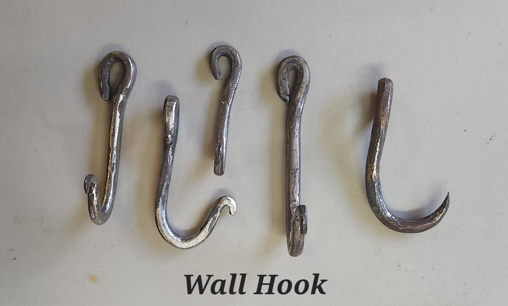

About Me
Hello my name is Kaleb Trent, and I am an undergraduate Mechanical Engineering Student at MIT.
I enjoy working with my hands, and challengining myself to do better.
One of the greatest pieces of advise that I have ever recieved was from an old mentor in Blacksmithing. He said, "The best tool for the job is what you hvae on hand." This has helped me to take what I have with me to find solutions to the problems I encounter during my everyday life.
Projects
Class-related
2.007 Design and Manufacturing Robot
Personal
Blacksmithing
V-Bit Bolt-Jaw Tongs

These tongs are made from .5'' round rebar. The open jaw design allows the user to grab odd-shaped things. Along with the bolt-jaw I also included v-bit groves with 1 running perpendicular to the handle, and the other running parallel to allow me to hold things in different orientations. These were the first things I forged, and while yes there
Leaf Pendants

These are all made from .25'' round rebar. First you have to taper away from you about a .25'' section at one end of the stock. Then you can isolate the section on the shoulder of the anvil. Flaten out the tapered sections to get the leaf shape. Then taper towards you about .5''+ of stock. This will then be curled around the horn of the anvil to provide the rign for the pendant.
Wall Hooks
These are all made from .25'' round rebar. First you taper down
Leaf Wall Hooks

These are all made from .25'' round rebar.
"S" Hooks
These are all made from .25'' round rebar.
Square "S" Hooks
The left hook is made from .25'' round rebar which I forged square. The right hook is make from .25'' square rot-iron.
Watering Can Handle
This made from .25'' square rot-iron.
Fire Poker
This fire poker is made from .5'' round rebar
Research
Kinematic Coupling Test Rig
5-axis CNC Milling Machine and Trainig Setup
Contact Me
For any questoins feel free to email me here ===>
Resume
Here is my LinkedIN
Incase you want a more summerized list of skills and projects here is my current resume